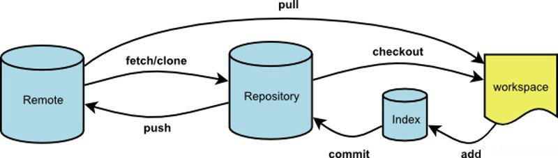
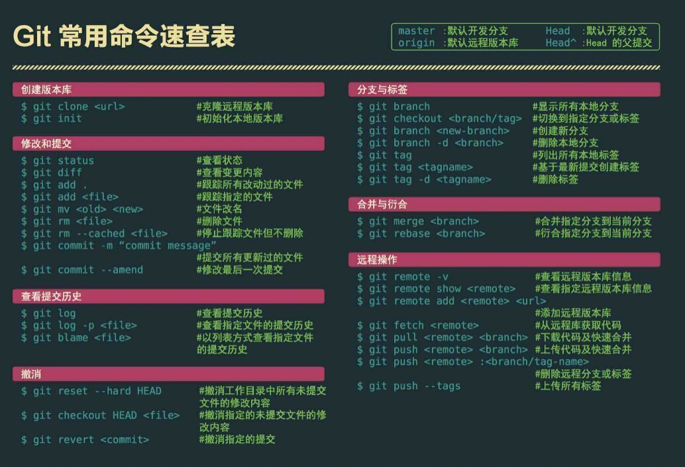

1 简易指南
1.1 安装
环境变量配置：
GIT_HOME
D:\Program Files\Git
cmd下输入
git --version
检测安装是否成功1.2 使用
1.2.1 创建仓库
创建文件夹，打开，然后执行
git init
以创建新的 git 仓库。1.2.2 检出（克隆）
执行如下命令以创建一个本地仓库的克隆版本：
git clone /path/to/repository
如果是远端服务器上的仓库，你的命令会是这个样子：
git clone username@host:/path/to/repository1.2.3 添加与提交
你可以计划改动（把它们添加到缓存区），使用如下命令：
git add <filename>
git add *
这是 git 基本工作流程的第一步；使用如下命令以实际提交改动：
git commit -m "代码提交信息"
现在，你的改动已经提交到了 HEAD，但是还没到你的远端仓库。1.2.4 推送改动
你的改动现在已经在本地仓库的 HEAD 中了。执行如下命令以将这些改动提交到远端仓库：
git push origin master
可以把 master 换成你想要推送的任何分支。
如果你还没有克隆现有仓库，并欲将你的仓库连接到某个远程服务器，你可以使用如下命令添加：
git remote add origin <server>
如此你就能够将你的改动推送到所添加的服务器上去了.1.2.5 分支
分支是用来将特性开发绝缘开来的。在你创建仓库的时候，master 是“默认的”。在其他分支上进行开发，完成后再将它们合并到主分支上。

创建一个叫做“feature_x”的分支，并切换过去：
git checkout -b feature_x
切换回主分支：
git checkout master
再把新建的分支删掉：
git branch -d feature_x
除非你将分支推送到远端仓库，不然该分支就是 不为他人所见的：
git push origin <branch>1.2.6 更新与合并
要更新你的本地仓库至最新改动，执行：
git pull
以在你的工作目录中 获取（fetch） 并 合并（merge） 远端的改动。
要合并其他分支到你的当前分支（例如 master），执行：
git merge <branch>
两种情况下，git 都会尝试去自动合并改动。不幸的是，自动合并并非次次都能成功，并可能导致 冲突（conflicts）。
这时候就需要你修改这些文件来人肉合并这些 冲突（conflicts） 了。
改完之后，你需要执行如下命令以将它们标记为合并成功：
git add <filename>
在合并改动之前，也可以使用如下命令查看：
git diff <source_branch> <target_branch>1.2.7 标签
在软件发布时创建标签，是被推荐的。这是个旧有概念，在 SVN 中也有。可以执行如下命令以创建一个叫做 1.0.0 的标签：
git tag 1.0.0 1b2e1d63ff
1b2e1d63ff 是你想要标记的提交 ID 的前 10 位字符。使用如下命令获取提交 ID：
git log
你也可以用该提交 ID 的少一些的前几位，只要它是唯一的。1.2.8 替换本地改动
假如你做错事（自然，这是不可能的），你可以使用如下命令替换掉本地改动：
git checkout -- <filename>
此命令会使用 HEAD 中的最新内容替换掉你的工作目录中的文件。已添加到缓存区的改动，以及新文件，都不受影响。
假如你想要丢弃你所有的本地改动与提交，可以到服务器上获取最新的版本并将你本地主分支指向到它：
git fetch origin
git reset --hard origin/master1.2.9 小贴士
内建的图形化 git：
gitk
彩色的 git 输出：
git config color.ui true
显示历史记录时，只显示一行注释信息：
git config format.pretty oneline
交互地添加文件至缓存区：
git add -i2 Git流程
2.1 远程流程

2.2 本地流程
你的本地仓库由 git 维护的三棵“树”组成。
第一个是你的 工作目录，它持有实际文件；
第二个是 缓存区（Index），它像个缓存区域，临时保存你的改动；
最后是 HEAD，指向你最近一次提交后的结果。

3 Git常用命令速查
